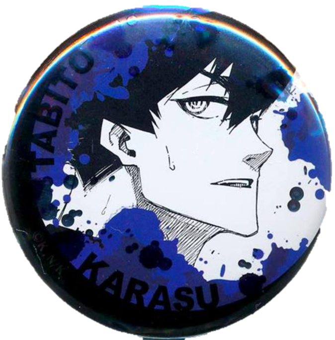
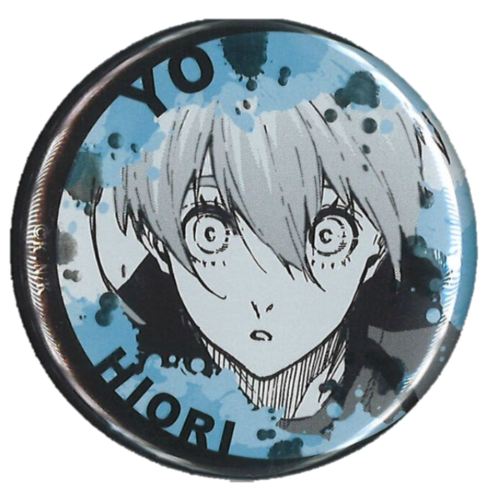

陰沉黑暗的房間裡，隱約傳出敲打鍵盤和點擊滑鼠的聲音，整間房內只有電腦螢幕的亮光，映照出水色的身影。
纖細的食指滑動滑鼠滾輪，然後停下、點開大標題。
「當今繁榮的社會不可不剷除的黑勢力」的標題底下，洋洋灑灑抨擊至今依然存在的「黑道」、「黑手黨」等組織，而大小僅次於大標題的，是名為『不良少年人數不減反增 少年的父母落淚呼籲』，旁邊還有一張灰階照片，婦人握緊手帕拭面，男人抿唇雖然強裝鎮定卻壓抑不住發顫的嘴角。
食指快速滾動著滾輪，然後關上頁面。青年打開桌面上的俄羅斯方塊程式，下意識點下開始鍵，第一個七字型的藍色積木緩緩落下。
「不良少年」，他心不在焉地想著，想到剛才的照片裡不曉得哪個少年或少女的父母，卻不是感到同情。
難道不正是因為父母，才會有人透過加入一些組織來找到歸屬嗎？儘管那些組織對這個社會來說並不是什麼好地方。
「……啊。」他小小聲喊了出來，「Game Over」的字樣在眼前閃爍，這恐怕是他這半年的最低紀錄，這個分數大概從國中以後就沒再看過了。
思量著要不要再開始下一輪，手機鈴聲適時響起，螢幕亮了起來提醒：『本月集會 20分鐘後開始』。看著手機螢幕再次暗下，他也順手將俄羅斯方塊關起來，推開椅子轉身出房。
尚未暗下的電腦螢幕裡，是今日晨報頭條：「港區黑手黨Cappello以高薪工作為誘餌 詐騙社會新鮮人」。

水藍色的青年在推開門後，因為驚愕微微瞪大雙眼。冰織羊雖然不敢說自己每次都最早到，但至少遲到的名單中不會有自己，但是今天Cappello的核心四人裡他竟然成為最晚到的。
關上門後，他語帶歉意：「抱歉，潔，我遲到了嗎？」
被稱為潔的黑藍短髮青年，潔世一不以為意：「你來得正好。不用擔心，蜂樂和凪只是因為剛好被我抓到才不得不準時到的。」
原本還捧著手機的白髮青年，凪誠士郎放下手機，整張臉扒在會議桌上悶悶地說：「好麻煩啊……我明明還在睡的……」
「冰織織如果可以再晚個十分鐘，就能在你臉上畫畫當作懲罰了說～」名為蜂樂的青年像個孩子似的轉著會議椅玩得不亦樂乎。
「好了，既然人都到齊了就先來開會吧。」潔開口：「蜂樂、凪，你們那邊負責的人最近有遇上什麼事嗎？」
「嗯～最近太和平了吧？一點事也沒有。」蜂樂又坐在椅子上飛速轉了一圈，然後用滾輪在地上轉出怪異的節奏。
凪微微抬起頭，提醒：「這種通常都叫做暴風雨前的寧靜。」說完，又趴下去繼續午睡。
「你們兩個！給我認真開會！」發出一陣嘆息後，潔轉頭看向冰織問：「那你那邊呢？」
「確實就像蜂樂和凪剛才說的，最近都沒什麼事。」
潔點點頭，極為小聲低喃：「如果真的是這樣就好了……」
冰織本來想仔細問他剛才說了什麼，但潔隨即換了一個話題：「對了，這個月開始有事情須要拜託冰織。」
「什麼事？」
「啊！是說新人的事對吧～」蜂樂拖著椅子往這裡滑過來，興沖沖道：「冰織也要有後輩了！」
在冰織不知所措前，潔雙手合十滿是歉意：「抱歉！明明你的工作是幕後資訊分析，還要你接下帶新人的工作……」
被這麼一說，冰織都有點不知道該回什麼，最後只是點點頭：「我知道了，那他們哪天開始來呢？」
「……啊，已經來了。」凪晃了晃手機，顯示收到新人的即時訊息。
<試閱結束>
Hat Trick
港區黑手黨之一的Cappello組下除了BOSS和兩位副手外，還有一個幕後核心人物－－被BOSS稱為大腦的冰織羊。
即便是這樣的他第一次被指派要帶領新人，掛著餘裕的新人烏旅人說話總是一針見血，明明應該避之唯恐不及，兩人卻越來越靠近……
作者：軒轅封
價格：100元
通路：CWT64台北場 | 7-11賣貨便通販
生日：8月15日
出生地：日本大阪府
現在年紀：29歲
身分：Cappello新人/…？
聲優：古川慎
作為新人加入Cappello卻一點也沒有新人的樣子，聽說以前就已經是關西地區著名的殺人屋，本人自言只是因為受夠了關西所以決定上京。帶著看透一切的笑容和犀利的眼神，善於用話術引導對方掉入自己的圈套，讓人不禁懷疑他是否真的只是新人……

烏旅人

冰織羊
生日：11月30日
出生地：日本京都府
現在年紀：26歲
身分：Cappello大腦
聲優：(我好想知道)
擅長電子益智遊戲的同時，也有著為人讚賞的邏輯思考能力。雖然長得弱不禁風，但只有BOSS潔世一在十年前就善待這樣的冰織，也讓他的長才得以發揮，他也把Cappello視為自己的歸屬。可是自從烏旅人到來，許多問題一一浮現……

Lemon
米津玄師
戻らない 幸しせがあることを
「有些幸福是一去不復返」
最後にあなたが教えてくれた
這是你在最後所告訴我的
言えずに隠してた昏い過去も
沒說出口 被隱藏起來的昏暗過去
あなたがいなきゃ永遠に昏いまま
如果沒有了你 就將永遠昏暗下去